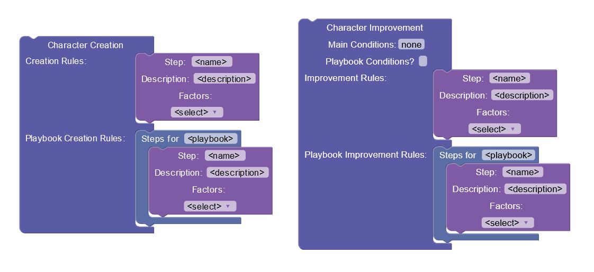
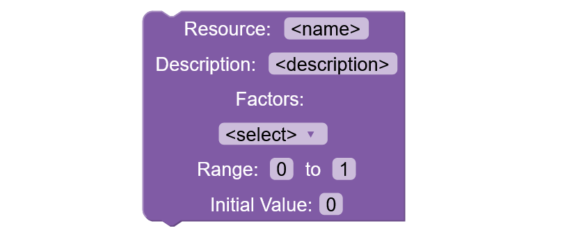
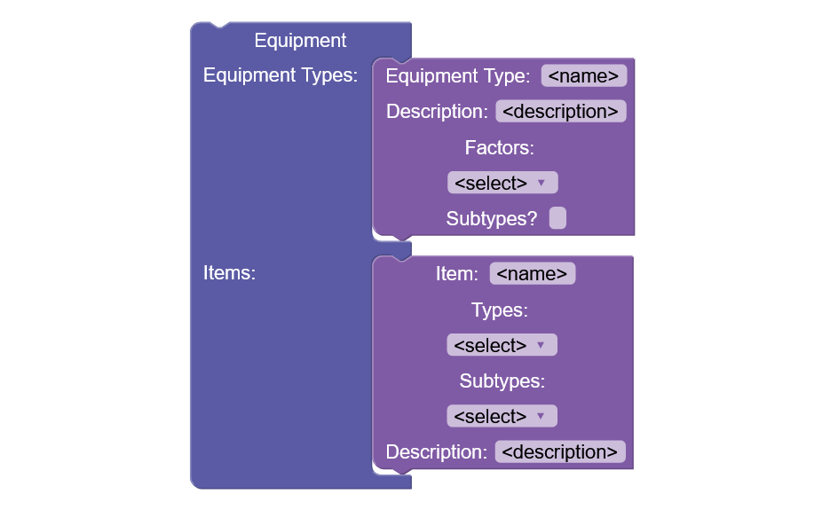

Assemble
Welcome to Assemble!
Designed at the outset for role-playing system designers, Assemble is a content-authorship tool which allows for RPG designers to plan and write Powered by the Apocalypse (PbtA) systems.
Powered by the Apocalypse

Assemble has been specifically designed to work best for Powered by the Apocalypse systems. Though Powered by the Apocalypse is generally considered a loose grouping (essentially defined by any system that takes inspiration from Apocalypse World, designed by Vincent and Meguey Baker) there are certain elements that most PbtA systems tend to have in common:
- The GM, or game master, is commonly referred to instead as the Master of Ceremonies (MC)
- Action is based around the use of "moves", which a system pre-defines for its players.
- To decide the outcome of most moves, two six-sided dice are rolled and applicable modifiers are added.
- Outcomes are either hit or miss; a roll of six or less is considered a miss, and a roll of seven or above is a hit.
- Hits are often further divided into successes (10+) and partial successes (7-9).
- Finally, classes are defined by single-sheet "playbooks", commonly designed for quick character setup, doubling as both a reference document and a character sheet.
Beyond Apocalypse World, other examples of Powered by the Apocalypse systems include Monsterhearts, Dungeon World, Bluebeard's Bride, and others. For more information on Powered by the Apocalypse systems, please visit the Powered by the Apocalypse website.
Assemble Basics
To simulate and visualize the construction of a standard PbtA system, Assemble utilizes a pattern language: a set of discrete fields that form an accepted system once they are filled out and iterated upon to the designer's liking. Designers employ pattern languages as a utility to show them which design options are at their disposal, to assist in laying out an effective, cohesive system blueprint. Patterns may be represented by text fields, checkboxes, dropdown menus, block inputs, or even blocks themselves:

Each box indicates one of several types of patterns that can be resolved.
These patterns function together to lay out a plan for organizing system elements that the designer can then fill in as necessary. Note that not every pattern needs to be resolved; rather, the pattern language should serve as a workflow to help the designer consider how their system might fulfill certain design criteria, whilst sticking to the designer's own goals.
Assemble operates with the help of the Blockly editor. To add a block to the system, simply select the category of the toolbox where the block is located,

drag out the block,

and connect the block to its place in the block tree.

Any block with a notch below it can be connected to additional blocks of the same type, and you are able to use as many or as few blocks as you need to craft your system as you wish.
You can export your Assemble project as an XML file by clicking Export Blocks at the bottom right corner of the page. You can also import other systems made in Assemble with the Import Blocks button. (Warning: Imports will delete your current workspace, so make sure you've saved everything first.)
Assemble separates role-playing systems into three distinct categories: Themes, Setting, and Mechanics. The rest of this page will describe the blocks in each of these categories, where those blocks can be found and placed, and the role each block plays within the system as a whole. For quick information about a particular block, you can also mouse over any block for a brief summary on how to use it. To see these blocks in action, check out the blocks entered into the Examples headings in the toolbox.
Themes
This section describes themes and their functions, both of which are located under the System heading of the toolbox. They are connected to the Themes input of the System block.

Themes can be loosely described as the overarching principles which drive the tone of a system's narrative and play. They may take the form of a genre (e.g. horror, detective fiction, sci-fi), a particular role-playing style (e.g. MC-less, player competition, modular), or an interesting story prompt (e.g. historical figures transported into a modern setting, dragons assuming the roles of adventurers, mall clerks having to fend off a zombie invasion). Identifying an underlying theme (or themes) to design a system around can be an important consideration when crafting a role-playing system that is captivating for players. Ensuring that the look and feel of your system is recognizable and unique is a major responsibility of effective theming. Themes are also useful for maintaining harmony between your system's individual elements; generally your system's parts should serve its overall themes and design philosophy wherever possible.
Functions are more low-level realizations of themes. They describe how a theme contributes to certain aspects of the game's design. For example, perhaps a theme of suspense has a function of red herrings being common in the story to throw off the players, or a function of rising action playing a role in how moves are made in the game. Functions may also operate on a more meta level; a modular theme could simply have the function of making play more intuitive or streamlining setup. Whatever your theme is, that theme should always have a precise direction for how it will impact the look and feel of your system.
Setting
This section describes blocks in the Setting heading of the toolbox. They are connected to the Setting input of the System block.

A setting is a fictional space in which a system's narrative is set. If it helps set the stage for the story, or builds the world of the system, it should go in here. If you want to define more settings for your system, you can do so by adding additional Setting blocks.
Societies are groups of people that can be encountered within the setting, whether united by blood, creed, community, or otherwise.
A history is an account of past events, however recent those events may be. Different subjects will have different histories. The same subject might even have different histories, depending on whose account is being considered.
Each History block is defined by three additional types of blocks: eras, entities, and events. Eras describe historical periods in which stories are set, specifying what age of human history they may be analogous to, and how far back known history might reach in a given setting. Entities are figures (whether they be humans, groups, or otherwise) that have left some impact on a story's world, or perhaps are currently active within it. Events are past occurrences that are relevant for the players, providing greater context for the world as it may currently exist.
A mystery is, in essence, a hint to something greater. It represents information that is not known to the players, and usually not even the MC. A mystery should be thought of as a kind of question, to be answered over the course of a game's campaign. Give the players an interesting enigma to ponder, and provide the MC with a basis to get their story-bending juices flowing. Avoid giving your own answers wherever possible.

A region is a relevant location within the setting. It can simply include a basic description of the general surroundings, or it can be expanded to include landmarks.
Landmarks are defined geographical features, buildings, and points of interest within a region, to give that region more flavor. Defining more landmarks in a given region might give your system's MC more to work with when planning their story.
Mechanics
Mechanics are where things get a little more complicated. The blocks related to system mechanics are each divided into the five remaining headings of the toolbox. You can also access the default player rules pattern from the System block. Please note that a system can only hold one player rules block at a time.
Moves
The Moves heading is arguably the most important area of mechanics design for PbtA systems. In this section, you will need to add the moves that are actionable by players, as well as their building blocks.

A move is any action that a player can take which is specified by the system. A move should have a name, an effect (a short summary of what it should be used for), a group of factors ordered by their sequential relevance in the move itself, and a detailed description of how the move is executed within the system's rules.

Before building a move, you will need to construct the relevant factor blocks. A factor is any metric that affects the move's action until it is resolved. It might be a stat that is relevant to the move, an operation (like making a choice or asking a question) that affects the move's outcome while it is being made, or any operation that plays a role in how the move itself is carried out. A factor can have one of four types: Scalar (has a positive or negative value that is directly combined with a roll), Reroll (calls for the repeat of a previous action or a re-rolling of the dice), Revision (gives an immediate response or ignores a different factor, move, or roll), or Meta (originates from story or gameplay rather than a rigid mechanic). Some factors can also originate as the result of certain moves; these factors should be marked as a Result to be tracked as such.
Once you've filled out some factor blocks and connected them to the "Move Factors" input of the Mechanics block, the dropdown menu under the "Factors" section of the move block will populate with the names of those factors, allowing you to select them and add them to the block. You can then continue adding as many factors as necessary. If a move results in any factors, select the "Result Factor(s)" checkbox, and you will be able to add any number of relevant result factors in a similar manner.

If your move's outcome is based on parameters outside of the standard ones used for PbtA systems (success, partial success, and so on; see "Powered by the Apocalypse" above for details), you can specify those parameters with parameter blocks. If your system uses special parameters, check the box labeled "special parameters" on the Mechanics block and insert your parameter blocks as needed. Make sure that the "range" fields encompass a valid range of potential roll outcomes.
Playbooks

Playbooks are the player classes of a Powered by the Apocalypse system; each playbook represents a certain personality or skill set for the character using it. The more playbooks a system has, the more options a player will have to choose from when deciding what character to play as.
A playbook should have some kind of introduction to help players learn about its general play-style and personality. This introduction can include a flavor pitch describing the playbook in the context of the system's world, a description of the playbook's social role, a summary of its mechanical role, or some combination of the three.
Playbooks should also contain a list of special features and/or moves at that playbook's disposal. Playbook moves are functionally identical to regular moves, but instead can only be applied to playbooks. Playbook features, on the other hand, describe passive attributes that a playbook has without constituting moves of their own. Like moves, they can affect or be affected by a set of relevant factors. Both playbook features and playbook moves can be connected to the "Moves/Features" section of the Playbook block.
Playbooks can also have resources that aren't shared by all playbooks (for more information on resources, read "Management" below).
Finally, playbooks can come with a set of options for starting items that they can choose from. To use the dropdown menu here, the system must first have some items defined (see "Equipment" for details). The process of choosing equipment should also be specified within the playbook's creation rules (see "Management" for details).
Management
The Management heading of the toolbox contains blocks for character creation, character improvement, steps, and playbook steps. Character creation and character improvement specify the rules for creating new characters, and improving (i.e, leveling up) existing ones, respectively. Each block breaks down the process into steps, each of which lays out a specific stage in the process of developing a character.
Playbooks may also have processes for creation and improvement that are unique from other playbooks. To specify playbook-specific creation or improvement processes, place a playbook step block (labeled "Steps for: <playbook>") under either "Playbook Creation Rules" or "Playbook Improvement Rules", label it with the appropriate playbook, and add the playbook-specific steps into that block instead.
The character improvement block also allows you to specify the conditions necessary for a character to improve (such as reaching a certain level of XP, or completing a certain task). Conditions can be universal to all characters, specific to certain playbooks, or work as a mixture of the two. If you need to enter playbook-specific conditions for improvement, check the box labeled "Playbook Conditions" and place condition blocks into the relevant input:
When using condition blocks, be sure to specify the playbook they apply to in addition to the conditions for that playbook's improvement.
Also located under the Management heading are resource blocks. Resources are values that are maintained as part of a character's information. Resources can be ability stats, health values, currency, or any other value that the players should keep track of over the course of play. Resources are also tied to factors, though in this case, these factors are mostly intended to represent the metrics which are dependent on each resource, rather than the other way around (for more information on factors, see the "Moves" section for details). Resources can either be universal for all player characters (placed in the "Resources" section of the player rules block) or unique to certain playbooks (placed in the relevant playbook blocks that use them).
Equipment
Equipment is comprised of the system-defined objects, weapons, and artifacts that players can use. Equipment is divided into two lists of blocks: equipment types and items.
Equipment types describe a certain category of items. Items that have a given type will have all the properties of that type, indicated by its factors (for more information on factors, see the "Moves" section for details). Types can also have subtypes, which have all the factors of the parent type, as well as additional factors that make that subtype more unique. Some types and subtypes may not need factors, but can still be useful to identify for clarity.
Items are the individual tools and objects that characters in the system can utilize for their purposes. Once you have entered some types into the "Equipment Types" section, you will be able to select an item's types via the "Types" dropdown menu. Once you have selected one or more types, those types' subtypes will appear in the "Subtypes" dropdown menu as well. Feel free to add as many types and subtypes to each item as are relevant.
Once you have added items to the system, you can specify any of those items as starting items for playbooks (see "Playbooks" for details).
Extra Mechanics

If your system has any extra quirks or elements that you don't feel are accurately covered by the existing blocks in Assemble, then you can specify those elements with extra mechanics blocks. These blocks contain fields for relevant factors, moves, and resources to be added as necessary. Mark the "Extra Mechanics" box of the Player Rules block to add them into the system.
For more information on factors, see the "Moves" section for details.
Assemble is an open-source web application written in JavaScript and Built with Blockly. View Assemble on Github!
Chrome is recommended to most effectively display Assemble.
Assemble ©2020 by Alexander Mayben.
Blockly ©2016 by Google.
Assemble and Blockly are both licensed under Apache 2.0.